I hold a bachelor's degree in computer science from Bhayangkara Jakarta Raya University and have technical skills in data analysis. My strengths include time management, critical thinking, and problem-solving, along with a growth mindset and adaptability. I excel in communication, particularly public speaking, which helps me convey ideas effectively. My goal is to grow professionally and contribute significantly to the company.
University of Bhayangkara Jakarta Raya
Bachelor's degree, Computer Science
2020 – 2024
GPA 3.78/4.00
SMK Negeri 02 Cikarang Barat
High School Diploma, Computer and Network Engineering
2016 – 2019
Data Annotator
Freelance Data Analyst
Data Analyst Intern
Data Scientist Trainee
Head of Curriculum and Developers Machine Learning
Data Scientist Trainee
Machine Learning Engineer Trainee
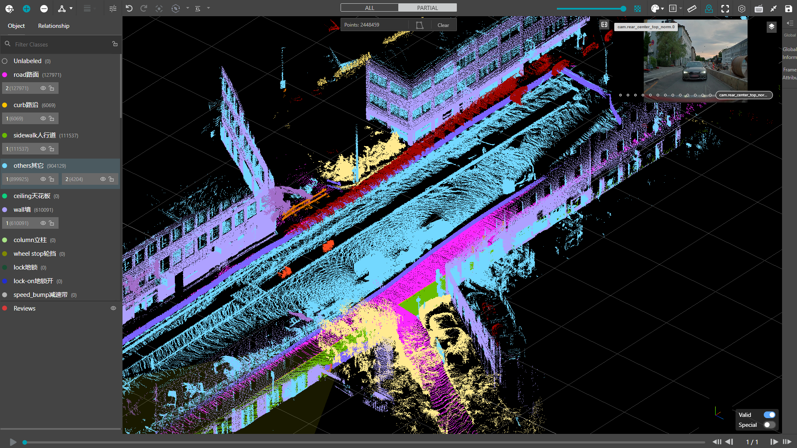
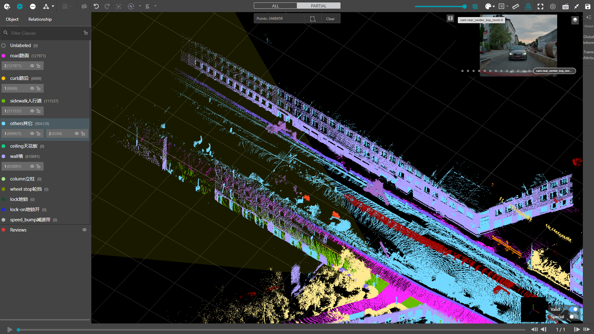
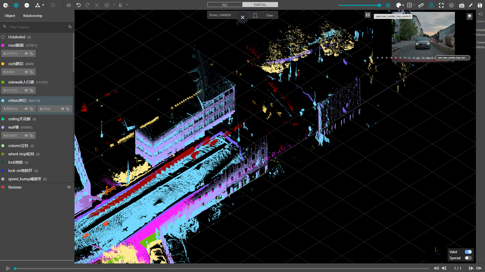
Performed 3D LiDAR point cloud segmentation in real-world highway and urban driving environments. The objects/elements annotated included road (pink), curb (yellow), sidewalk (light green), others (sky blue), ceiling (dark green), wall (purple), and other relevant classes according to the annotation guidelines.
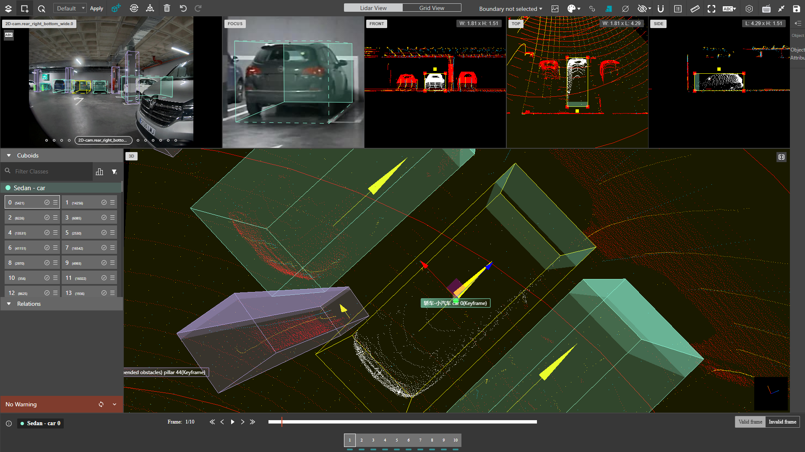
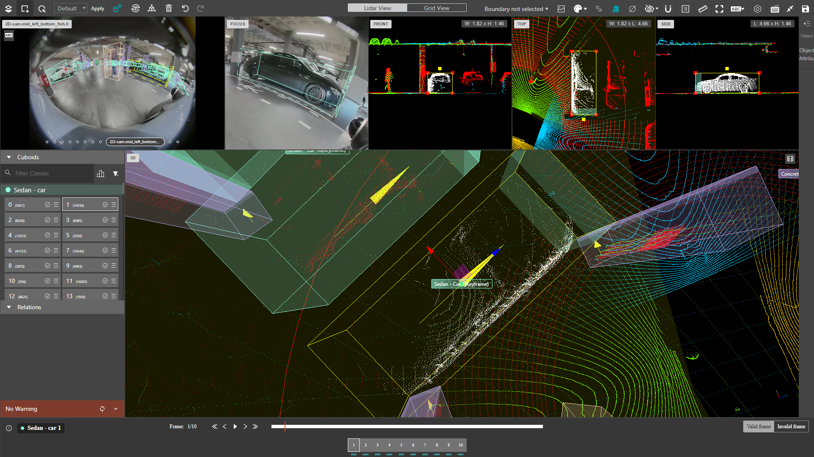
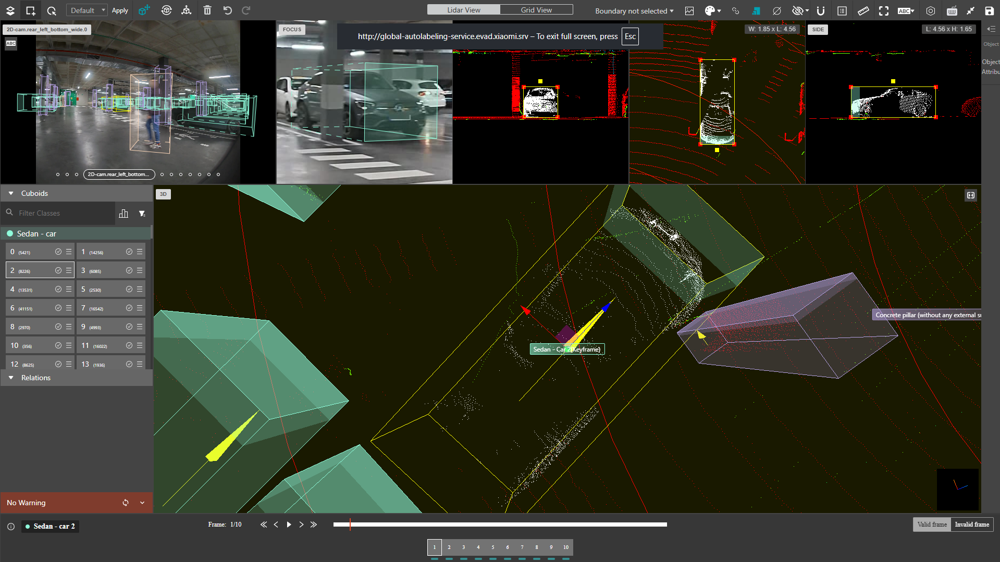
Performed 3D LiDAR bounding box object detection in parking lot environments. The objects/elements annotated included sedan (green), suv (purple), and other relevant classes according to the annotation guidelines.
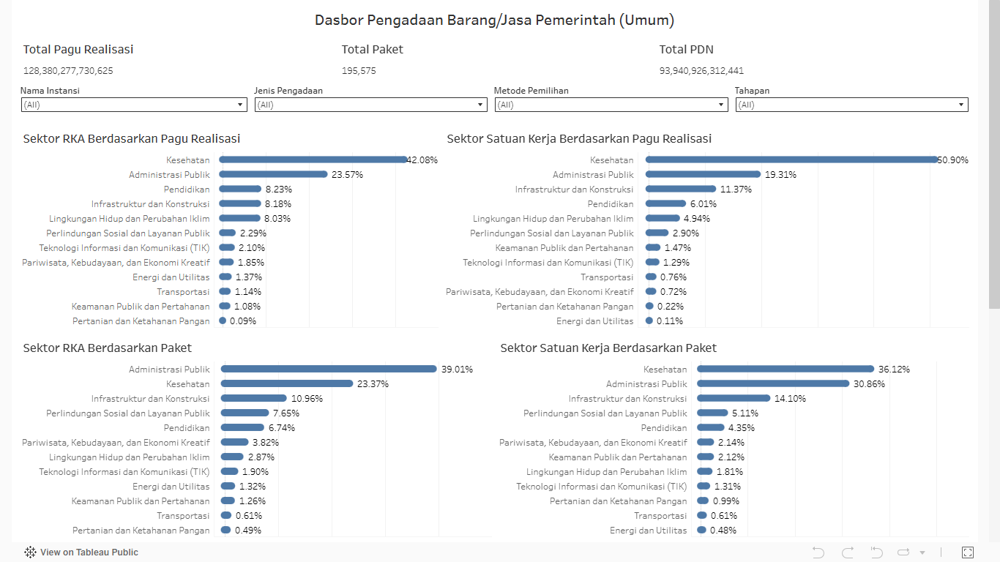
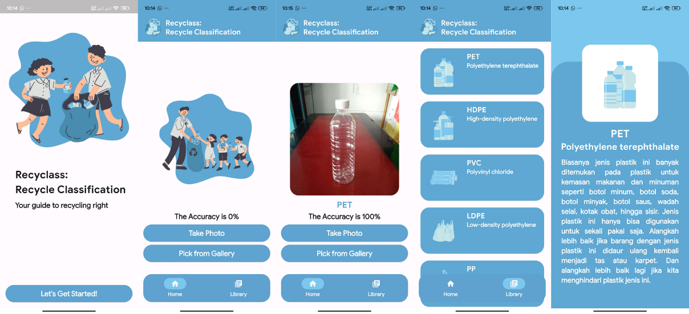
Transfer learning utilizes the MobileNet model that has been pre-trained on a dataset of plastic waste types resulting in an accuracy of 98% for training data and 98% for validation data. This technology is expected to help in recognizing and classifying plastic waste types, as well as supporting a better waste management system, including in sorting, recycling, and processing plastic waste. Thus, this effort can be an important step in reducing the negative impact of plastic waste on the environment in Indonesia.
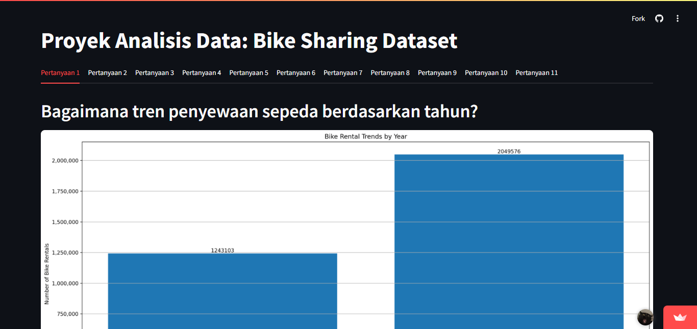
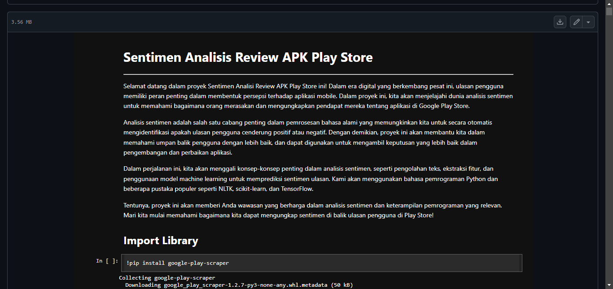
Conducting sentiment analysis using the comment dataset for the MyTelkomsel application on the Google Play Store using various deep learning algorithms including Reccurent Neural Network (RNN), Long Short Term Memory (LSTM), and Gated Reccurent Unit (GRU).
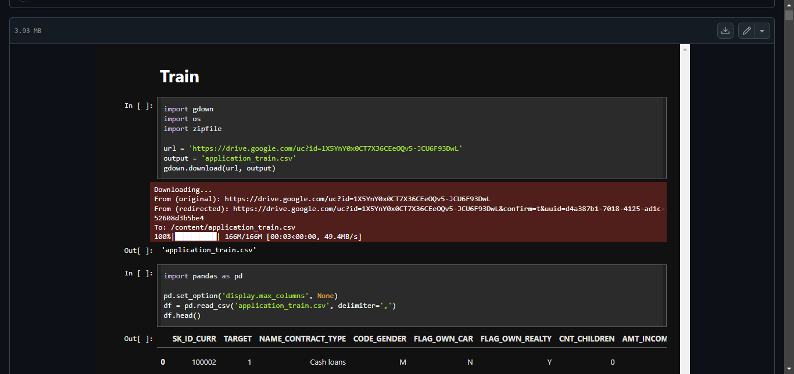
Conducting prediction analysis using the home credit dataset for identifying characteristics of clients who face difficulties in repaying loans using various machine learning algorithms including Decision Tree, Random Forest, Logistic Regression, K-Nearest Neighbors, Naive Bayes, and Multi-Layer Perceptron (MLP).
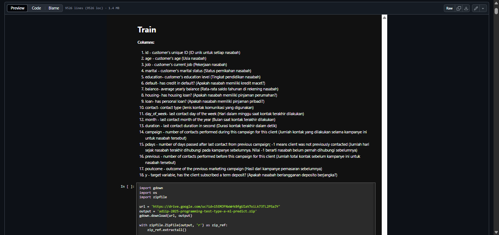
Conducting prediction analysis using the bank marketing dataset for identifying characteristics of clients who subscribed to a term deposit using various machine learning algorithms including Decision Tree, Random Forest, K-Nearest Neighbors, Support Vector Machine, and Neural Network.
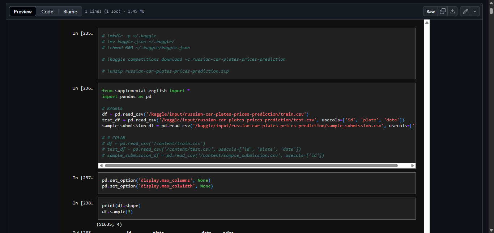
Conducting regression prediction using the car prices dataset for predicting cars based on the car plate and the date using various machine learning algorithms including Decision Tree, Random Forest, and Bagging.
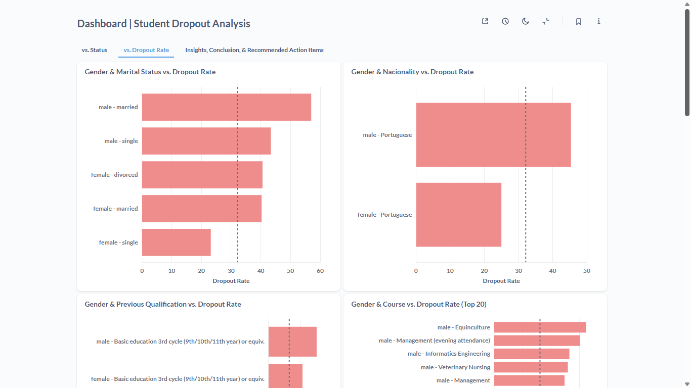
Conducting dropout risk analysis by identifying key factors influencing student attrition using machine learning techniques. The project includes developing an interactive dashboard for real-time monitoring and, optionally, building predictive models using algorithms such as Logistic Regression, K-Nearest Neighbors (KNN), Linear Discriminant Analysis (LDA), Decision Tree, Random Forest, and AdaBoost to proactively detect students at high risk of dropping out.
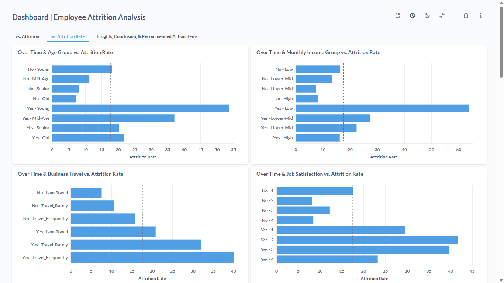
Conducting employee attrition analysis using HR dataset to identify key factors influencing resignation decisions and predict potential attrition using various machine learning algorithms including Logistic Regression, K-Nearest Neighbors (KNN), and Linear Discriminant Analysis (LDA). The project also includes developing an interactive dashboard to support real-time monitoring and strategic HR interventions.
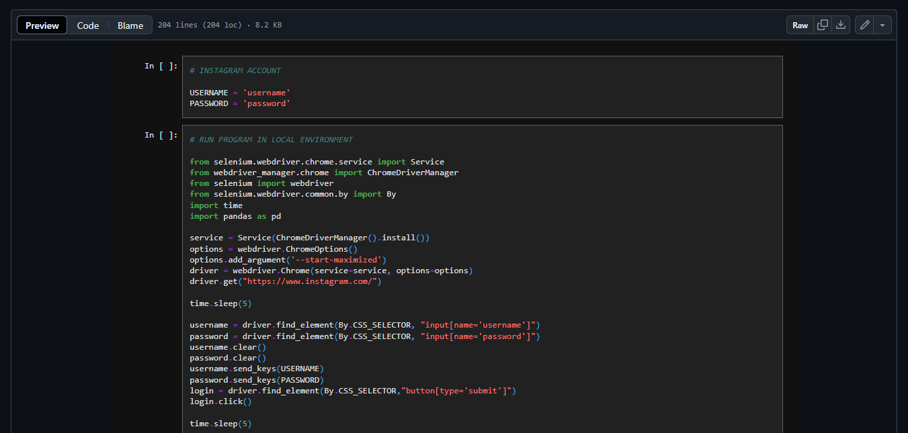
Conducting web scraping on several social media and e-commerce platforms such as Facebook, Instagram, TikTok, YouTube, Shopee, and Tokopedia using several Python libraries such as Selenium and googleapiclient for further analysis.